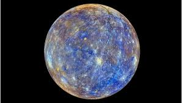

|

Merkür
Merkür, Güneş’e en yakın gezegen olup Güneş Sistemi’nin en küçük gezegenidir. Güneş’e olan yakınlığı nedeniyle son derece yüksek sıcaklıklara ulaşabilse de,
atmosferinin neredeyse yok denecek kadar ince olması yüzünden geceleri aşırı derecede soğur. Bu nedenle gündüz ve gece sıcaklıkları arasında büyük farklar
görülür; gündüz sıcaklığı yaklaşık 430°C’ye kadar çıkarken, gece sıcaklığı -180°C’ye kadar düşer.
Merkür’ün yüzeyi, Ay’a benzer biçimde sayısız kraterle kaplıdır. Bu kraterler, milyonlarca yıl boyunca asteroit ve gök taşlarının çarpması sonucu oluşmuştur.
Atmosferinin ince olması, bu çarpmaları önleyecek koruyucu bir tabakanın bulunmadığı anlamına gelir. Bu yüzden yüzeyi çok eski ve neredeyse hiç
değişmemiştir.
Gezegen, Güneş’in etrafındaki yörüngesini yaklaşık 88 Dünya gününde tamamlar, yani bir Merkür yılı sadece 88 gündür. Ancak kendi ekseni etrafında oldukça
yavaş döner; bir Merkür günü neredeyse 59 Dünya gününe eşittir. Bu durum, gezegenin bir tarafının uzun süre Güneş’e dönük kalmasına ve diğer tarafının uzun
süre karanlıkta kalmasına neden olur.
Merkür’ün uydusu yoktur ve halkaları da bulunmaz. Küçük boyutuna rağmen oldukça yoğun bir gezegendir; bu da çekirdeğinin büyük oranda demirden oluştuğunu
gösterir. Bu özelliği, Merkür’ü Güneş Sistemi’nin en yoğun gezegenlerinden biri yapar.
Gözle görülmesi zor bir gezegendir çünkü Güneş’e çok yakın olduğu için genellikle sabahın erken saatlerinde ya da gün batımından hemen sonra kısa bir
süreliğine ufukta belirir. Antik çağlardan beri bilinen Merkür, adını Roma mitolojisindeki hızlı hareket eden haberci tanrı “Merkür”den almıştır.
Bu isim, gezegenin gökyüzündeki hızlı hareketine oldukça uygundur.
|